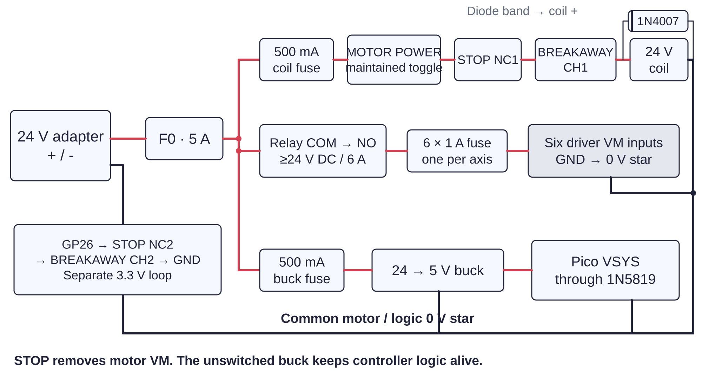

Controller / power120 / 179
Switch the motor bus
The latched stop and released gun crash mount each open the relay coil circuit. Their separate contacts report the same fault to the powered controller.
Add24 V adapter · 5 A main, 6 × 1 A motor and 500 mA coil fuses · 24 V relay · stop · toggle · 1N4007
Tools / setupAdapter unplugged · meter · ferrule crimper

- Wire adapter + through the 5 A fuse, then split to relay COM and the coil control route.
- Wire the 500 mA coil branch → MOTOR POWER toggle → STOP NC1 → BREAKAWAY CH1 → coil +. Coil - and adapter - go to common 0 V.
- Route relay NO through one 1 A fuse per VM branch. Put the diode's band at coil +.
- Label separate STOP NC2 / BREAKAWAY CH2 sense contacts. Their wires belong only to the logic loop; absent crash contacts stay open.
Ready when
Both pressing STOP and releasing the crash mount interrupt coil continuity independently. Every driver's VM feed passes through its fuse and relay NO. A bypassed fuse, NC/NO mix-up or shared stop terminal defeats the cutoff. Disconnect the adapter and trace the named routes again.